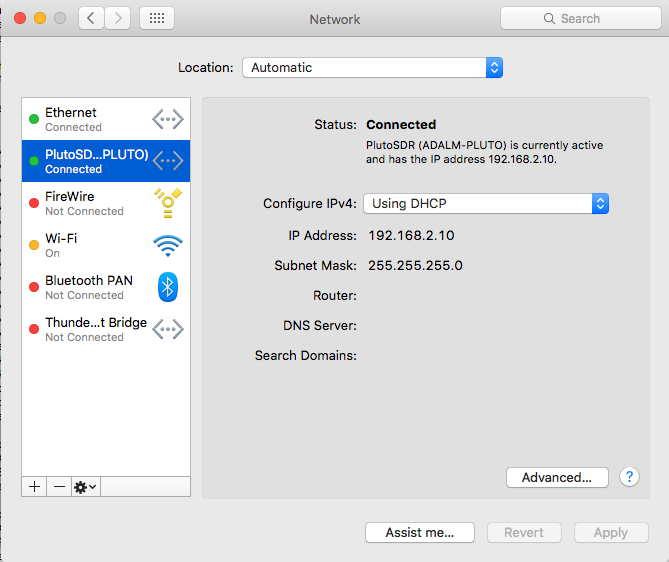
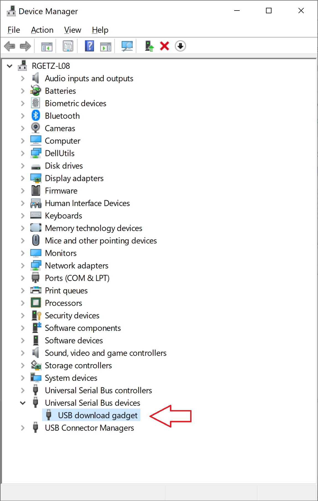
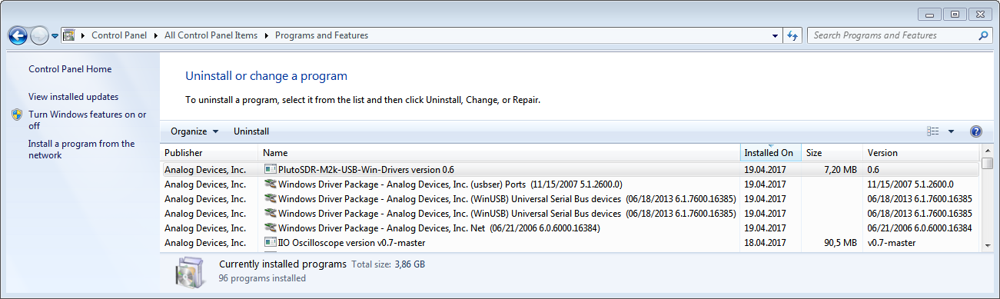
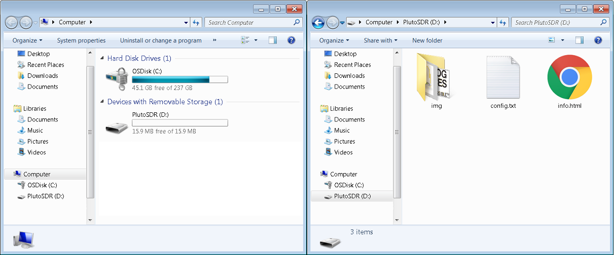
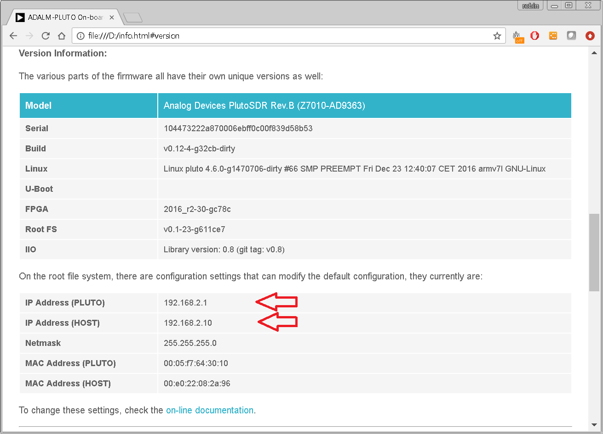

Installing Drivers
Jump to the host of interest:
Linux Drivers
Make sure the following modules are installed in your kernel:
cdc-acm,cdc_ether
rndis_host
rndis_wlan
usbnet
On most modern distributions - these will be installed/compiled by default. It should just be a simple matter to plug the USB cable into your Linux machine. We have tested and verified on these distributions:
Ubuntu 16.04 LTS
Red Hat Enterprise Linux 7 [1]
SUSE Linux Enterprise Desktop 12 [2]
Debian 8.x
Debian 9.1
SUSE Leap 15
SUSE Leap 15.1
It is likely that other distributions can use the ADALM-PLUTO or ADALM2000, but we are in a limited position to provide technical support for those distributions.
In order to access some USB functions without root privileges, it’s recommended to install the PlutoSDR or ADALM2000 udev rules. Simply download 53-adi-plutosdr-usb.rules or 53-adi-m2k-usb.rules and copy into into the /etc/udev/rules.d/ folder.
You can also use
this plutosdr-m2k-udev.deb package
to install both the PlutoSDR and the ADALM2000
udev rules.
To install the debian package, use one of the following:
sudo apt-get install ./plutosdr-m2k-udev.deb or
sudo dpkg -i plutosdr-m2k-udev.deb.
Afterwards reload rules or restart udev, using either
udevadm control --reload-rules or sudo service udev restart
Example dmesg
When plugging Pluto in (m2k should be similar), you (if you are looking), you will see kernel messages of:
[ 1776.708333] usb 8-2: new high-speed USB device number 3 using ehci-pci
[ 1776.843799] usb 8-2: New USB device found, idVendor=0456, idProduct=b673
[ 1776.843811] usb 8-2: New USB device strings: Mfr=1, Product=2, SerialNumber=3
[ 1776.843818] usb 8-2: Product: PLUTO
[ 1776.843824] usb 8-2: Manufacturer: Analog Devices Inc.
[ 1776.843830] usb 8-2: SerialNumber: 00000001
[ 1776.853016] rndis_host 8-2:2.0 usb0: register 'rndis_host' at usb-0000:00:1d.7-2, RNDIS device, 9e:18:bb:fa:07:c6
[ 1776.853957] cdc_acm 8-2:2.2: This device cannot do calls on its own. It is not a modem.
[ 1776.854080] cdc_acm 8-2:2.2: ttyACM0: USB ACM device
[ 1776.855371] usb-storage 8-2:2.4: USB Mass Storage device detected
[ 1776.855559] scsi9 : usb-storage 8-2:2.4
[ 1777.852893] scsi 9:0:0:0: Direct-Access Linux File-Stor Gadget 0406 PQ: 0 ANSI: 2
[ 1777.853329] sd 9:0:0:0: Attached scsi generic sg2 type 0
[ 1777.854618] sd 9:0:0:0: [sdb] 16384 512-byte logical blocks: (8.38 MB/8.00 MiB)
[ 1777.856248] sd 9:0:0:0: [sdb] Write Protect is off
[ 1777.856252] sd 9:0:0:0: [sdb] Mode Sense: 0f 00 00 00
[ 1777.856863] sd 9:0:0:0: [sdb] Write cache: enabled, read cache: enabled, doesn't support DPO or FUA
[ 1777.859892] sdb:
[ 1777.862868] sd 9:0:0:0: [sdb] Attached SCSI removable disk
[ 1778.022282] FAT-fs (sdb): utf8 is not a recommended IO charset for FAT filesystems, filesystem will be case sensitive!
Showing the three devices (ethernet, serial and mass storage) enumerating, and interface with the devices in the normal linux methods.
If you happen to see something like:
[ 84.257337] usb usb1-port2: unable to enumerate USB device
The solution is to use an external hub and after that all works.
Serial
NOTE: For suse and probably other linux versions – be sure you are also member of the dialout group.
~$
cat ~/.kermrc
set line /dev/ttyACM0
set speed 115200
set carrier-watch off
set flow-control none
~$
kermit -l /dev/ttyACM0 -b 115200
C-Kermit 9.0.302 OPEN SOURCE:, 20 Aug 2011, for Linux+SSL+KRB5 (64-bit)
Copyright (C) 1985, 2011,
Trustees of Columbia University in the City of New York.
Type ? or HELP for help.
(/home/analog/github/iio-oscilloscope/) C-Kermit>c
Connecting to /dev/ttyACM0, speed 115200
Escape character: Ctrl-\ (ASCII 28, FS): enabled
Type the escape character followed by C to get back,
or followed by ? to see other options.
----------------------------------------------------
Login timed out after 60 seconds
Welcome to Pluto
pluto login: root
Password: analog
~$
uname -a
Linux pluto 4.6.0-g88f1b2c #7 SMP PREEMPT Wed Nov 2 18:21:13 CET 2016 armv7l GNU/Linux
~$
exit
Welcome to Pluto
pluto login: Ctrl-\
(Back at imhotep.analog.com)
----------------------------------------------------
(/home/analog/github/iio-oscilloscope/) C-Kermit>exit
Closing /dev/ttyACM0...OK
Mass Storage
~$
mount | grep -i pluto
/dev/sdb1 on /media/analog/PlutoSDR type vfat
(rw,nosuid,nodev,relatime,uid=1000,gid=1000,fmask=0022,dmask=0022,codepage=437,
iocharset=utf8,shortname=mixed,showexec,utf8,flush,errors=remount-ro,uhelper=udisks2)
~$
ls -l /media/analog/PlutoSDR/
total 8
-rw-r--r-- 1 analog analog 206 Dec 31 1979 config.txt
-rw-r--r-- 1 analog analog 4721 Dec 31 1979 info.html
~$
firefox /media/analog/PlutoSDR/info.html
Ethernet
Caution
Like most of the network settings on Pluto or the M2k - things are meant to be easy to use. This also means things are inherently insecure.
~$
/sbin/ifconfig
enx00e022d6d804: flags=4163<UP,BROADCAST,RUNNING,MULTICAST> mtu 1500
inet 192.168.2.10 netmask 255.255.255.0 broadcast 192.168.2.255
inet6 fe80::2e0:22ff:fed6:d804 prefixlen 64 scopeid 0x20<link>
ether 00:e0:22:d6:d8:04 txqueuelen 1000 (Ethernet)
RX packets 4 bytes 1030 (1.0 KiB)
RX errors 0 dropped 0 overruns 0 frame 0
TX packets 47 bytes 10604 (10.3 KiB)
TX errors 0 dropped 0 overruns 0 carrier 0 collisions 0
~$
ip addr show
7: c: <BROADCAST,MULTICAST,UP,LOWER_UP> mtu 1500 qdisc pfifo_fast state UNKNOWN group default qlen 1000
link/ether 00:e0:22:d6:d8:04 brd ff:ff:ff:ff:ff:ff
inet 192.168.2.10/24 brd 192.168.2.255 scope global dynamic enx00e022d6d804
valid_lft 862988sec preferred_lft 862988sec
inet6 fe80::2e0:22ff:fed6:d804/64 scope link
valid_lft forever preferred_lft forever
The weird enx00e022d6d804 comes from systemd on a debian based
distribution (which my host is). The enu prefix (or sometimes wlu) would
describe the USB port, and the rest 00e022d6d804 is the host USB MAC
address. This is what it uses, rather than a USB path (like
usb-0000:00:14.0-2, which is how the kernel refers to things) since USB path
aren’t persistent nor predictable (it changes depending on the port you plug
things into).
ssh config
Adding a quick/short ssh config file,
which describes the USB device can be helpful. It’s maintained in github, and
it’s a simple matter of grabbing the raw text file. You shouldn’t do the exact
below unless you have no ~/.ssh/config file.
Otherwise, click on this link
and copy/paste it into the system wide /etc/ssh/ssh_config file, or the user
specific ~/.ssh/config file.
~$
wget https:%%//%%raw.githubusercontent.com/analogdevicesinc/plutosdr_scripts/master/ssh_config -O ~/.ssh/config
--2017-01-26 19:47:51-- https:%%//%%raw.githubusercontent.com/analogdevicesinc/plutosdr_scripts/master/ssh_config
Resolving raw.githubusercontent.com (raw.githubusercontent.com)... 151.101.116.133
Connecting to raw.githubusercontent.com (raw.githubusercontent.com)|151.101.116.133|:443... connected.
HTTP request sent, awaiting response... 200 OK
Length: 366 [text/plain]
Saving to: ‘~/.ssh/config’
~/.ssh/config 100%[===============>] 366 --.-KB/s in 0s
2017-01-26 19:47:51 (6.49 MB/s) - ‘~/.ssh/config’ saved [366/366]
Since the ssh key on the pluto changes every boot, we want to be able to never
store the key (so we store it to /dev/null. This does make it easier to use
(don’t need to continually edit the known_hosts file), but does make things
susceptible to man in the middle attacks.
~$
ssh plutosdr
Warning: Permanently added 'pluto' (ECDSA) to the list of known hosts.
root@pluto's password: analog
~$
uname -a
Linux pluto 4.6.0-08511-gc1315e6-dirty #247 SMP PREEMPT Mon Oct 24 16:46:25 CEST 2016 armv7l GNU/Linux
~$
exit
Connection to 192.168.2.1 closed.
if you have sshpass installed, you can use that so you dont need to type in
a password:
~/pluto$
sshpass -panalog ssh plutosdr
Warning: Permanently added 'pluto' (ECDSA) to the list of known hosts.
Welcome to:
______ _ _ _________________
| ___ \ | | | / ___| _ \ ___ \
| |_/ / |_ _| |_ ___ \ `--.| | | | |_/ /
| __/| | | | | __/ _ \ `--. \ | | | /
| | | | |_| | || (_) /\__/ / |/ /| |\ \
\_| |_|\__,_|\__\___/\____/|___/ \_| \_|
http://wiki.analog.com/university/tools/pluto
IIO devices
For SUSE: https://software.opensuse.org/package/libiio – pick the repo and install via one click install
~$
sudo apt-get install libiio-utils
Reading package lists... Done
Building dependency tree
Reading state information... Done
The following NEW packages will be installed:
libiio-utils
0 upgraded, 1 newly installed, 0 to remove and 191 not upgraded.
Need to get 13.9 kB of archives.
After this operation, 74.8 kB of additional disk space will be used.
Get:1 http:%%//%%ftp.us.debian.org/debian stretch/main amd64 libiio-utils amd64 0.7-1 [13.9 kB]
Fetched 13.9 kB in 0s (70.1 kB/s)
Selecting previously unselected package libiio-utils.
(Reading database ... 279782 files and directories currently installed.)
Preparing to unpack .../libiio-utils_0.7-1_amd64.deb ...
Unpacking libiio-utils (0.7-1) ...
Setting up libiio-utils (0.7-1) ...
Try to make sure you can talk to the device, and find the IIO devices:
~$
iio_info -n 192.168.2.1 | grep device
IIO context has 5 devices:
iio:device0: adm1177
iio:device1: ad9361-phy
iio:device2: xadc
iio:device3: cf-ad9361-dds-core-lpc
iio:device4: cf-ad9361-lpc
Read from an IIO device buffer:
~$
iio_readdev -n 192.168.2.1 -s 64 cf-ad9361-lpc | hexdump -x
0000000 ff8d 003b 002a 0013 006c 0045 ffdb 0001
0000010 ffc1 ffd5 ffc0 0030 ffbf 0068 0042 008f
0000020 0027 007e fff5 ffe2 ffea ffbb ffd1 0039
0000030 ffd1 006e 0030 0058 0025 0034 001b ffa0
0000040 ffde ffe9 ff88 006a ffff 0038 0071 0012
0000050 0031 ffdf ffd7 ffc3 ff72 ffed ffae 0016
0000060 0002 005d 001c 0031 ffff ffef ffec ffe9
0000070 ff97 fff6 ffac 0024 0012 0047 00d6 0095
0000080 0087 0076 ffe4 0036 ff96 fffa ff6b 0047
0000090 ffd8 0068 008e 0040 0133 ffc8 006a ffc4
00000a0 ff8d ff9d ff89 ff9d 0005 0012 002c 0073
00000b0 0036 005c 006c fff6 005d ffff fffc ffce
00000c0 ffbc ffdc fff5 004d 0037 008a 004b 0045
00000d0 0044 ffad 0012 ff90 fff8 ffa3 ffa6 ffef
00000e0 ffe8 0079 0086 0097 005e 0041 005f 0005
00000f0 007b ffe6 0025 ffa3 ffef 0011 ffef 0044
Mac OS X Drivers
Serial
~$
ls -l /dev/tty.
crw-rw-rw- 1 root wheel 17, 0 Nov 7 15:13 /dev/tty.Bluetooth-Incoming-Port
crw-rw-rw- 1 root wheel 17, 2 Nov 7 15:28 /dev/tty.usbmodem1414
adi-mm:tests analogdevices$ screen /dev/tty.usbmodem1414 115200
Welcome to Pluto
pluto login: root
Password: analog
~$
uname -a
Linux pluto 4.6.0-08511-gc1315e6-dirty #247 SMP PREEMPT Mon Oct 24 16:46:25 CEST 2016 armv7l GNU/Linux
#
CNTRL-A CNTRL-\
Really quit and kill all your windows [y/n] y
[screen is terminating]
Mass Storage
~$
mount | grep Pluto
/dev/disk1s1 on /Volumes/PlutoSDR (msdos, local, nodev, nosuid, noowners)
Ethernet
Hint
In order to use the ADALM-PLUTO (aka. PlutoSDR) or ADALM2000 (aka. M2k) with Mac OSX the ethernet compatibility mode must be set to USB CDC-NCM.
Please see instructions for changing the usb ethernet compatibility mode.
Caution
Like most of the network settings on Pluto or the M2k - things are meant to be easy to use. This also means things are inherently insecure.
You should see something like this when you goto -> System Preferences -> Network.
{kind=link}
~$
ifconfig | grep -B 3 -A 3 192
en4: flags=8863<UP,BROADCAST,SMART,RUNNING,SIMPLEX,MULTICAST> mtu 1486
ether 00:e0:22:6d:b2:d8
inet6 fe80::2e0:22ff:fe6d:b2d8%en4 prefixlen 64 scopeid 0xa
inet 192.168.2.10 netmask 0xffffff00 broadcast 192.168.2.255
nd6 options=1<PERFORMNUD>
media: autoselect
status: active
ssh config
Please follow the same steps from Linux’s ssh config.
Windows Drivers
There are different aspects of the software for the ADALM-PLUTO and ADALM2000:
device drivers, which allows your PC to properly set up communication between your PC and the actual device, and
application code, like MATLAB, Simulink, GNU Radio, iio-oscilloscope (aka osc), or scopy.
To install the drivers, it’s a simple matter of downloading and executing the driver installer.
Important
Before running the installer, please ensure that the hardware supported by the drivers is not already connected. If the hardware is connected when the installer is run, the installation of the driver files may fail.
Download
This download should support all of: Windows 11, Windows 10, Windows 8.1, Windows 8, Windows 7 Service Pack 1. If you run into issues, please let us know.
Windows USB drivers for PlutoSDR and M2k (Windows 32-bit / 64-bit)
At the end, you should see a picture like (either for Pluto or M2k):
{kind=link}
{kind=link}
{kind=link}
DFU Mode
If you don’t see the above, and see something like this instead, this means the device is in dfu_update mode. It’s likely in this mode since a bad firmware is in the device; or a firmware update failed for some reason. To recover from this, ensure the latest firmware is installed on the device.
{kind=link}
Drivers uninstall
From the control panel navigate to Programs and Features. Double click or right click and select Uninstall. Uninstalling the PlutoSDR-M2k-USB-Win-Drivers package will automatically remove the Windows Driver Packages (USBser, WinUSB and Net) shown below as well.
{kind=link}
USB Devices
Once the drivers are installed, and the device (Pluto or M2k) is plugged in, the following subsystems should be ready to use:
USB Composite Device (The device is a single USB gadget that has the ability to perform more than one function, and needs to be exposed to the operating system as multiple devices)
USB Ethernet/RNDIS Gadget (Remote Network Driver Interface Specification (RNDIS) is a Microsoft proprietary protocol used mostly on top of USB. It provides a virtual Ethernet link to most versions of the Windows, Linux and OS X operating systems. To the host, the usb device acts as an external Ethernet card)
USB Mass Storage (USB Mass Storage is a set of protocols defined by the USB Implementers Forum that makes a USB device accessible to any host computing device and enables file transfers between the host and the USB device. To a host, the USB device acts as an external hard drive.)
Serial Console (115200-8N1), in this case COM15, but it will be different on your PC.
IIO USBD
Linux File-Stor Gadget USB Device (which allows the USB mass storage to work properly).
Serial
You need to have find your favorite Terminal program, here are a few of the ones we use (but don’t support - if you have questions, please check with the internet/google).
The terminal settings are 115200 baud, 8 bits, no parity, 1 stop bit. This is
referred to as 115200-8N1. The default username is root, and the default
root password is analog.
Finding the serial port (which constantly changes, every time you plug a device in), is just matter of checking device manager (see above).
Mass Storage
It should be a simple matter of opening the drive, in this case, double click on “D”, to get at the info.html page.
Ethernet
Caution
Like most of the network settings on Pluto or the M2k - things are meant to be easy to use. This also means things are inherently insecure.
For example - the root password of Pluto is analog. We post it on the
Internet. Think about that for a moment. This could allow anyone with an IP
connection to take over the device and use it for malicious purposes.
Never set up a bridge between the Internet and a network connected Pluto with the default images.
Unfortunately - nothing on your host understands the what the IP address of the usb device is. You, the human behind the keyboard need to understand this before any sort of networking will work. There are two main ways to do this:
Determine the IP address
The IP address is set by the device and can be found by looking inside the
ADALM-PLUTO’s mass storage device, and the info.html page. Just click on the
version button at the top of the page:
and then check out the Pluto IP address, and the host IP address.
In this case, the IP address of the PLUTO device is 192.168.2.1 (which is
the default for all devices). If you need to change this (if you have multiple
devices), please check the customizing Pluto
documentation.
Checking from serial port
Open your favorite serial application:
Welcome to Pluto
pluto login: root
Password: analog
Welcome to:
%%
______ _ _ _________________
| ___ \ | | | / ___| _ \ ___ \
| |_/ / |_ _| |_ ___ \ `--.| | | | |_/ /
| __/| | | | | __/ _ \ `--. \ | | | /
| | | | |_| | || (_) /\__/ / |/ /| |\ \
\_| |_|\__,_|\__\___/\____/|___/ \_| \_|
%%
http:%%//%%wiki.analog.com/university/tools/pluto
~$
ifconfig usb0
usb0 Link encap:Ethernet HWaddr 00:05:F7:64:30:10
inet addr:192.168.2.1 Bcast:192.168.2.255 Mask:255.255.255.0
UP BROADCAST RUNNING MULTICAST MTU:1500 Metric:1
RX packets:502 errors:0 dropped:115 overruns:0 frame:0
TX packets:7 errors:0 dropped:0 overruns:0 carrier:0
collisions:0 txqueuelen:1000
RX bytes:66132 (64.5 KiB) TX bytes:2420 (2.3 KiB)
IIO devices
The IIO device shows up in device manager, and allows you to make native IIO connections to the device.
Bringing up a Windows Console should show you something like this:
C:\>
iio_info -s
Library version: 0.16 (git tag: 5cdeaaa)
Compiled with backends: local xml ip usb serial
Available contexts:
0: 0456:b673 (Analog Devices Inc. PlutoSDR (ADALM-PLUTO)), serial=104473222a87000618000600473ed57ae0 [usb:3.8.5]
C:\>
iio_attr -a -C
Using auto-detected IIO context at URI "usb:3.8.5"
IIO context with 8 attributes:
local,kernel: 4.6.0-g651ed13
usb,idVendor: 0456
usb,idProduct: b673
usb,release: 2.0
usb,vendor: Analog Devices Inc.
usb,product: PlutoSDR (ADALM-PLUTO)
usb,serial: 104473222a87000618000600473ed57ae0
usb,libusb: 1.0.22.11312